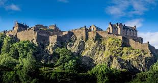
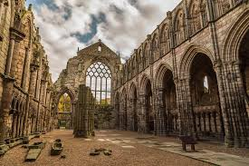
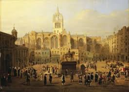
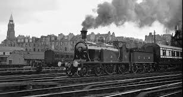
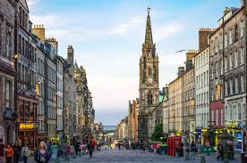

Ancient Beginnings
Long before Edinburgh’s skyline bristled with stone spires and castles, the volcanic hill now crowned by Edinburgh Castle was home to a Celtic fortress called Din Eidyn. As early as the Iron Age, this rocky outcrop served as a stronghold for local tribes, offering a natural defensive advantage over the surrounding landscape.
By the 7th century, Din Eidyn fell to the Angles, beginning its long journey into the city we know today. Although much of that early world has faded, traces of ancient walls and legends whisper through Edinburgh’s foundations, anchoring the modern city to a past that stretches back over two thousand years.
Medieval Foundations
By the early medieval period, Din Eidyn had evolved from a tribal stronghold into a bustling centre of power. In the 7th century, the fortress fell to the Angles and became known as "Edinburgh," part of the Kingdom of Northumbria. It wasn't until the 10th century, however, that the area firmly became a part of Scotland, symbolizing the ever-shifting political tides of early Britain.
The construction of Edinburgh Castle atop Castle Rock in the 12th century marked the true beginning of the city's medieval prominence. Below the castle, the town grew around the Royal Mile, a sloping street that connected the fortress to Holyrood Abbey. The narrow closes and wynds (alleys) of medieval Edinburgh bustled with merchants, craftsmen, and travelers. Life inside the city walls was lively — but also cramped and unsanitary, a contrast to the grandeur of the royal court above. These foundations laid the path for Edinburgh to become Scotland’s political and cultural heartbeat for centuries to come.
The Scottish Enlightenment
By the 18th century, Edinburgh transformed once again — but this time, through the power of ideas. Known as the "Athens of the North," the city became a beacon of knowledge, innovation, and philosophical thought. Great minds like David Hume, Adam Smith, and James Hutton roamed the cobbled streets, discussing philosophy, economics, and science in smoky taverns and grand lecture halls alike.
The city's physical landscape reflected its intellectual vibrancy: the elegant neoclassical architecture of the New Town rose proudly, embodying the Enlightenment ideals of reason, order, and beauty. Coffee houses buzzed with debate, universities flourished, and Edinburgh established itself as a cultural powerhouse. This period not only shaped Scotland’s destiny but sent ripples through Europe and the wider world, influencing democracy, literature, economics, and modern science.
Victorian Ambition
The 19th century ushered in an era of dramatic growth and ambition for Edinburgh. Fueled by the Industrial Revolution, the city expanded far beyond its medieval boundaries. Railways stitched Edinburgh to the wider UK, while new suburbs like Marchmont and Morningside grew rapidly, providing grand homes for a rising middle class.
Victorian pride can still be felt today in the city's majestic stone buildings, grand monuments, and the intricate detailing of places like the Scott Monument and the Royal Scottish Academy. Yet alongside grandeur, the era brought its challenges. Overcrowded slums persisted in parts of the Old Town, prompting early movements for urban reform. The duality of progress and hardship defined Victorian Edinburgh — a city striving toward modernity while grappling with the weight of its past.
Modern Renaissance
Today, Edinburgh stands as a vibrant, living tapestry woven from centuries of history, innovation, and creativity. After the devastation of two World Wars, the city found new life in cultural revival. Festivals like the Edinburgh International Festival and the Fringe Festival were born, filling the city’s streets with performers, artists, and dreamers every summer — a tradition that now draws millions from around the world.
Modern Edinburgh masterfully blends old and new: historic closes and medieval spires rise alongside contemporary art galleries, dynamic tech startups, and world-class universities. Preservation efforts ensure that its iconic heritage sites endure, while bold new architecture and sustainable development projects prepare the city for the future. In every corner of Edinburgh today, from the Royal Mile to Leith’s waterfront, you can still feel the proud echo of its ancient spirit — but you’ll also find a city alive with fresh possibilities.